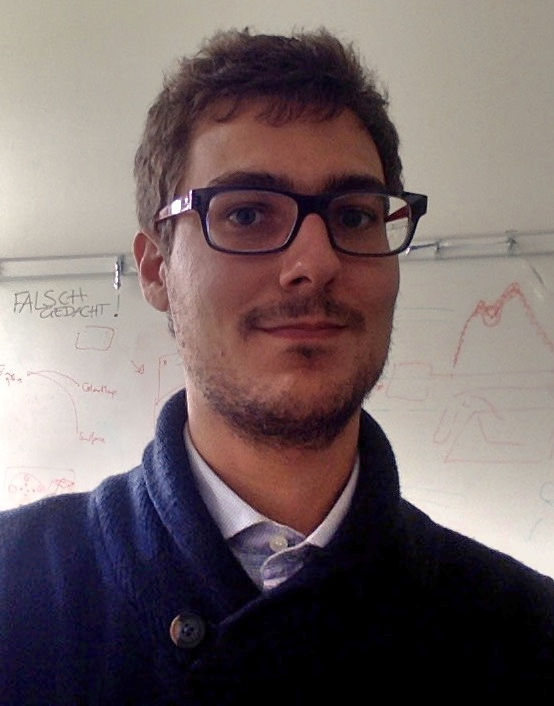

About Me:
I am a researcher (III level) of the IMATI (Istituto di Matematica Applicata e Tecnologie Informatiche "Enrico Magenes") at the CNR (National Research Council).
I received a Master Degree in Mathematics from the University of Genova (Italy) in July 2012.
In May 2016, I received a Ph.D. in Computer Science at the same university under the supervision of Professor Leila De Floriani and Professor Maria Evelina Rossi.
I have been a postdoc fellow at:
- Department of Computer Science of the University of Maryland (March 2016 - October 2016);
- Visual Information Analysis group of the Kaiserslautern University of Technology (November 2016 - October 2017);
- Institut für Geometrie group of the Graz University of Technology (November 2017 - June 2019);
- Statistic and Data Science group of the Polytechnic University of Torino collaborating with SmartData@PoliTO (July 2019 - June 2020).
My Interests:
My interests are in various topics related to Algebraic Topology, Computational Geometry and Commutative Algebra. Specifically, I focus my studies on Topological Data Analysis. The aim of my research is to develop theoretically-consistent data structures and algorithms for extracting topological information from very large data sets, such as point data and network data, for applications to scientific data analysis.
This is made possible by investigating and exploiting different tools, such as simplicial and persistent homology, discrete Morse theory, and multi-resolution models.
My CV can be downloaded here.